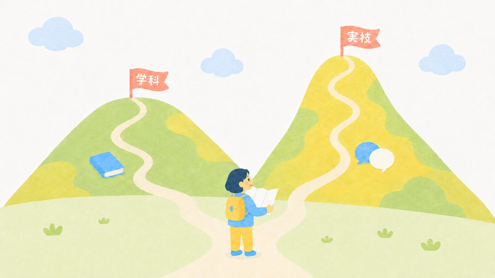
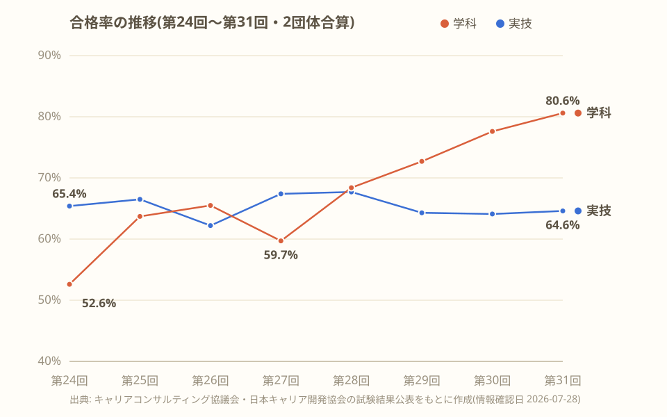
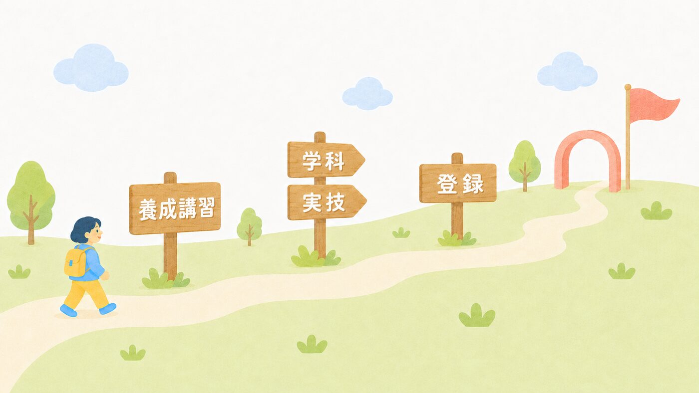
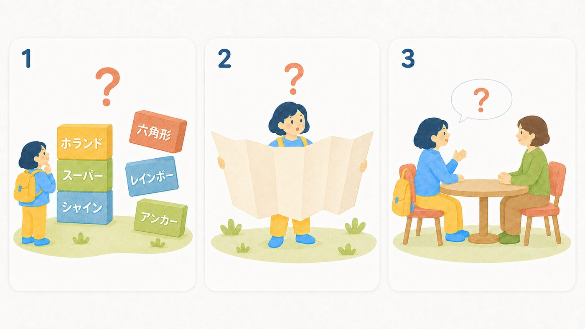

キャリコン学びピクニック
キャリコン学びピクニックキャリアコンサルタント試験の難易度と合格率【最新・推移グラフつき】
合格率の実数と推移、そして「何がどう難しいのか」を、受験生の目線で正直に整理します。
更新日: 2026年7月28日
結論:数字はやさしめ。ただし山は「実技」
キャリアコンサルタント試験の合格率は、直近の第31回で学科80.6%・実技64.6%。数字だけ見ると「国家資格の中ではやさしめ」に見えます。ただしこれは、養成講習(約150時間)を修了した人たちが受けたうえでの数字です。そして合否を分ける本当の山は、学科ではなく実技(論述・面接)にあります。

合格率の推移 — 学科はいま「追い風」

| 回 | 学科 | 実技 |
|---|---|---|
| 第24回 | 52.6% | 65.4% |
| 第25回 | 63.7% | 66.5% |
| 第26回 | 65.5% | 62.2% |
| 第27回 | 59.7% | 67.4% |
| 第28回 | 68.4% | 67.7% |
| 第29回 | 72.7% | 64.3% |
| 第30回 | 77.6% | 64.1% |
| 第31回 | 80.6% | 64.6% |
このデータから読み取れることは2つあります。
1つめ。学科は第27回(59.7%)を底に、4回連続で上昇し、第31回では80%を超えました。「学科が鬼門」と言われたのは少し前の話で、いまは正しく対策すれば十分に届く水準です。
2つめ。実技は62〜68%の間でずっと安定しています。学科がやさしくなっても実技は変わらない——つまり、合否を分けるのは実技だ、ということです。
試験のしくみを30秒で

- 受験資格 — 養成講習の修了、または実務経験(3年以上)など
- 学科 — 四肢択一50問・100点満点で70点以上
- 実技 — 論述+面接(ロールプレイ)・150点満点で90点以上(論述に足切りあり)
- 学科・実技は別々に受けられ、片方だけの合格は次回以降に持ち越せる
- 合格後に登録して、はじめて「キャリアコンサルタント」と名乗れる(名称独占資格)
実施団体が2つある(協議会とJCDA)
試験はキャリアコンサルティング協議会と日本キャリア開発協会(JCDA)の2団体が実施しています。第31回の団体別の結果はこの通りです。
| 協議会 | JCDA | |
|---|---|---|
| 学科 | 80.9% | 79.5% |
| 実技 | 63.8% | 67.8% |
学科は共通問題なのでほぼ同じ。実技は採点の観点が異なるため差が出ることがありますが、回によって上下は入れ替わるので「どちらが受かりやすい」とは断定できません。多くの人は、通った養成講習の系列で選んでいます。
「難しさ」の正体は3つ

① カタカナ理論家の壁。スーパー、シャイン、クランボルツ……。学科50問のうち、理論家・理論の出題は大きな割合を占めます。名前と理論を入れ替える「ひっかけ」が定番です。
② 範囲の広さ。理論だけでなく、労働法・統計・制度(能力開発基本調査、教育訓練給付など)まで出題されます。深さよりも「広さ」で消耗する試験です。
③ 実技は「別競技」。知識がいくらあっても、15分のロールプレイで「聴く」は別のスキルです。実技の合格率が64%前後で動かないのは、これが理由です。
この難しさへの、このサイトなりの答え
- カタカナの壁には → 理論家図鑑(48人)とことば図鑑。覚え方と「間違えやすいポイント」つき
- 範囲の広さには → 頻出用語だけ先にやると毎日1問1答(3分)
- 実技には → 論述ボードゲームとことばのキャッチボール(傾聴練習)
他の資格と比べると?
合格率だけ見れば、社会保険労務士(例年1桁%)などと比べて高く、「超難関」ではありません。ただし、受験者のほぼ全員が約150時間の養成講習を終えた本気の大人である点は忘れずに。「やさしい試験」ではなく、「準備が正当に報われる試験」というのが、学んでいる実感に近い表現です。
まとめ
学科は上昇傾向で追い風。本当の山は実技。合格率の数字より「準備の質」が合否を決めます。理論家と用語を早めに味方につけて、実技の練習を積み重ねていきましょう。これから養成講習選びをする人は、養成講座の選び方と講座の比較からどうぞ。
情報確認日: 2026-07-28 ／ 出典: キャリアコンサルティング協議会・日本キャリア開発協会の試験結果公表をもとに作成。数値は今後の回で変動します。